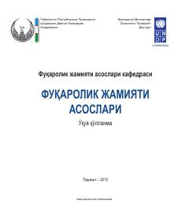

FJMazkur o'quv qo'llanma fuqarolik jamiyatining nazariy asoslari va uning rivojlanish bosqichlariga bag'ishlangan.
Ushbu o'quv qo'llanma fuqarolik jamiyatining nazariy asoslari, uning tarixi va zamonaviy mazmunda rivoj topish jarayonlarini yoritib beradi. Shuningdek, O'zbekistonda fuqarolik жамияти институтlarining шаклланиши, rivojlanishi va ularning davlat boshqaruvidagi o'rni ilmiy asosda tahlil qilingan. Kitob davlat boshqaruvi akademiyasi tinglovchilari, talabalar va tadqiqotchilar uchun mo'ljallangan.